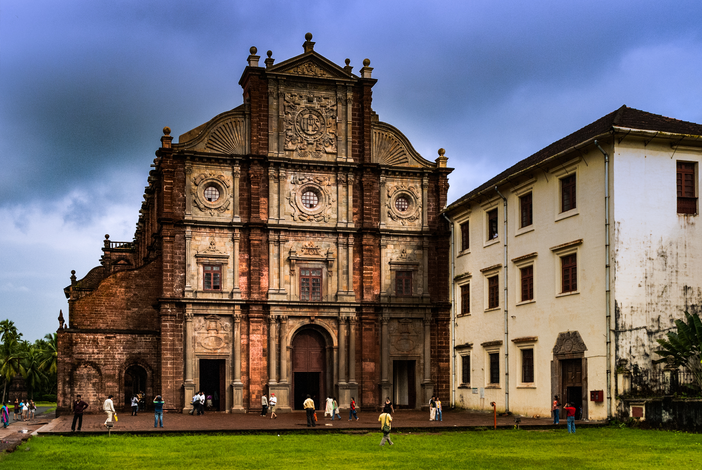

Day-1 Activities
Dudhsagar Falls, nestled amidst the dense forests of Goa, cascades dramatically from a towering height, creating a mesmerizing spectacle of frothy white waters against a backdrop of lush greenery. Its thundering roar and picturesque surroundings make it a must-visit destination for nature lovers and adventure seekers alike.
The Basilica of Bom Jesus is a renowned Catholic basilica located in Goa, India, recognized by UNESCO as a World Heritage Site1. It is known for housing the mortal remains of St. Francis Xavier and is considered one of the best examples of baroque architecture and Portuguese colonial architecture in India1.

The Immaculate Conception Church is a Catholic church located in Doresanipalya, Bangalore13. Established in 1928, it is known for its spiritual guidance and community participation, with Mass timings throughout the week in Kannada13.
Day-2 Activities
Chapora Fort, situated in North Goa, overlooks the picturesque Chapora River and offers stunning panoramic views of the coastline. This historic fort, famous for its appearance in Bollywood movies, stands as a testament to Goa's rich cultural and architectural heritage.

Baga Beach, nestled along the coast of North Goa, is renowned for its vibrant atmosphere, golden sands, and lively shacks serving delicious seafood. With a plethora of water sports activities and beachside entertainment options, Baga Beach attracts both local tourists and international visitors seeking a fun-filled coastal experience in Goa.
Shree Mangesh Temple, located in Priol village in Ponda taluka of Goa, is one of the largest and most revered Hindu temples in the state. Dedicated to Lord Shiva as Mangesh, it features a stunning blend of Hindu and Portuguese architectural styles, attracting devotees and tourists alike with its spiritual ambiance and historical significance.

Day-3 Activities
Candolim Beach, nestled in North Goa, is renowned for its tranquil shores, golden sands, and serene ambiance, making it a perfect escape for those seeking relaxation. With a blend of laid-back beach vibes and a range of water sports activities, Candolim Beach caters to both leisure seekers and adventure enthusiasts, offering a delightful coastal experience in Goa.
Aguada Fort, perched atop a hill overlooking the Arabian Sea in North Goa, is a historic Portuguese fortification dating back to the 17th century. This imposing fortress, originally built to guard against Dutch and Maratha invasions, now offers breathtaking views of the coastline and serves as a popular tourist attraction in Goa.

Arvalem Waterfalls, located near the village of Sanquelim in North Goa, cascades gracefully amidst lush greenery, offering a refreshing retreat from the bustling city life. Visitors can enjoy the serene surroundings and take a dip in the natural pool formed at the base of the falls, making it a popular spot for picnics and nature lovers in Goa.